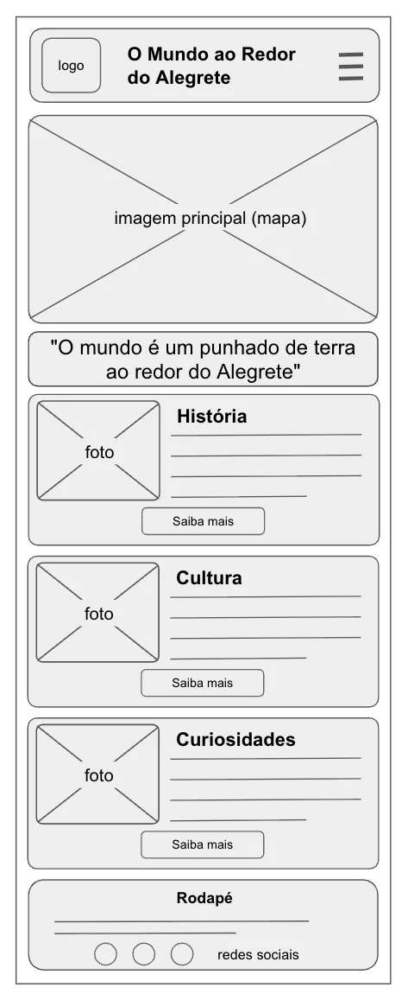
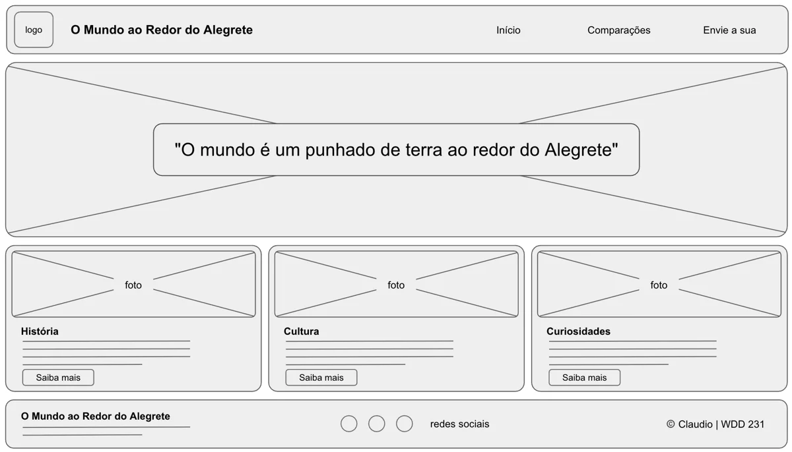

Nome do Site
O Mundo ao Redor do Alegrete
O nome vem de um ditado que todo alegretense conhece:
"O mundo é um punhado de terra ao redor do Alegrete."
Escolhi esse nome porque ele já mostra o assunto e o tom do site: o orgulho do alegretense pela sua terra, contado com carinho e bom humor.
Finalidade do Site
- Apresentar a história, a cultura e as curiosidades do Alegrete, cidade da fronteira oeste do Rio Grande do Sul.
- Comparar mais de quinze paisagens, prédios e costumes de lugares famosos do mundo com o que o Alegrete já tem em casa, com detalhes de cada comparação.
- Permitir que os visitantes enviem suas próprias comparações por meio de um formulário.
Cenários
- Nunca ouvi falar do Alegrete. Onde fica e o que tem de interessante lá?
- Qual é a "Estátua da Liberdade" do Alegrete?
- Sou alegretense e moro longe. Como mando aquela comparação que eu sempre faço?
Esquema de Cores
As cores foram inspiradas no campo do pampa e na bandeira do Rio Grande do Sul.
-
Verde campo #2F5D34
Cabeçalho, rodapé e barra de navegação. -
Vermelho farroupilha #A51C30
Títulos, botões e links ao passar o mouse. -
Amarelo mate #E0B83A
Destaques, bordas dos cards e item ativo do menu. -
Creme #F5EEDC
Fundo das páginas.
Tipografia
Títulos: Rye (Google Fonts)
Bah, que lindo!
Fonte com jeito de faroeste e de campanha, usada nos títulos, no nome do site e nos nomes das comparações.
Texto: Source Sans 3 (Google Fonts)
Fonte simples e fácil de ler, usada nos parágrafos, no menu, nos cards e no formulário.
Wireframes da Página Inicial
Esboços em preto e branco da estrutura da página inicial em uma tela pequena e em uma tela grande.

